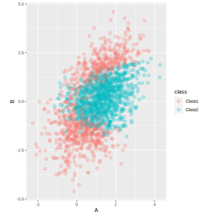
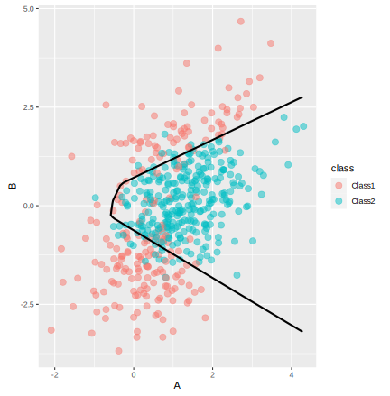

library(AppliedPredictiveModeling)
set.seed(321)
cls_train <- quadBoundaryFunc(2000) %>% select(A = X1, B = X2, class)
cls_val <- quadBoundaryFunc( 500) %>% select(A = X1, B = X2, class)
cls_test <- quadBoundaryFunc( 500) %>% select(A = X1, B = X2, class)Classification models using a neural network
model fitting
torch
neural networks
Train a classification model and evaluate its performance.
Introduction
To use code in this article, you will need to install the following packages: AppliedPredictiveModeling, brulee, and tidymodels. You will also need the python torch library installed (see ?torch::install_torch()).
We can create classification models with the tidymodels package parsnip to predict categorical quantities or class labels. Here, let’s fit a single classification model using a neural network and evaluate using a validation set. While the tune package has functionality to also do this, the parsnip package is the center of attention in this article so that we can better understand its usage.
Fitting a neural network
Let’s fit a model to a small, two predictor classification data set. The data are in the modeldata package (part of tidymodels) and have been split into training, validation, and test data sets. In this analysis, the test set is left untouched; this article tries to emulate a good data usage methodology where the test set would only be evaluated once at the end after a variety of models have been considered.
A plot of the data shows two right-skewed predictors:
ggplot(cls_train, aes(x = A, y = B, col = class)) +
geom_point(alpha = 1 / 4, cex = 3) +
coord_fixed()
Let’s use a single hidden layer neural network to predict the outcome. To do this, we transform the predictor columns to be more symmetric (via the step_BoxCox() function) and on a common scale (using step_normalize()). We can use recipes to do so:
biv_rec <-
recipe(class ~ ., data = cls_train) %>%
step_normalize(all_predictors())This recipe is not directly executed; the steps will be estimated when the model is fit.
We can use the brulee package to fit a model with 5 hidden units and a 10% dropout rate, to regularize the model:
nnet_spec <-
mlp(epochs = 1000, hidden_units = 10, penalty = 0.01, learn_rate = 0.1) %>%
set_engine("brulee", validation = 0) %>%
set_mode("classification")
nnet_wflow <-
biv_rec %>%
workflow(nnet_spec)
set.seed(987)
nnet_fit <- fit(nnet_wflow, cls_train)
nnet_fit %>% extract_fit_engine()
#> Multilayer perceptron
#>
#> relu activation
#> 10 hidden units, 52 model parameters
#> 2,000 samples, 2 features, 2 classes
#> class weights Class1=1, Class2=1
#> weight decay: 0.01
#> dropout proportion: 0
#> batch size: 2000
#> learn rate: 0.1
#> training set loss after 1000 epochs: 0.375Model performance
In parsnip, the predict() function can be used to characterize performance on the validation set. Since parsnip always produces tibble outputs, these can just be column bound to the original data:
val_results <-
cls_val %>%
bind_cols(
predict(nnet_fit, new_data = cls_val),
predict(nnet_fit, new_data = cls_val, type = "prob")
)
val_results %>% slice(1:5)
#> A B class .pred_class .pred_Class1 .pred_Class2
#> 1 0.7632082 -0.04012164 Class2 Class2 0.06255509 0.93744493
#> 2 0.9823745 -0.16911637 Class2 Class2 0.05721300 0.94278705
#> 3 1.0558147 0.52817699 Class2 Class2 0.10368267 0.89631736
#> 4 1.2424507 1.10902951 Class2 Class2 0.34966809 0.65033191
#> 5 1.5889815 2.71047720 Class1 Class1 0.97951710 0.02048291
val_results %>% roc_auc(truth = class, .pred_Class1)
#> # A tibble: 1 × 3
#> .metric .estimator .estimate
#> <chr> <chr> <dbl>
#> 1 roc_auc binary 0.957
val_results %>% accuracy(truth = class, .pred_class)
#> # A tibble: 1 × 3
#> .metric .estimator .estimate
#> <chr> <chr> <dbl>
#> 1 accuracy binary 0.91
val_results %>% conf_mat(truth = class, .pred_class)
#> Truth
#> Prediction Class1 Class2
#> Class1 175 18
#> Class2 27 280Let’s also create a grid to get a visual sense of the class boundary for the test set.
a_rng <- range(cls_train$A)
b_rng <- range(cls_train$B)
x_grid <-
expand.grid(A = seq(a_rng[1], a_rng[2], length.out = 100),
B = seq(b_rng[1], b_rng[2], length.out = 100))
# Make predictions using the transformed predictors but
# attach them to the predictors in the original units:
x_grid <-
x_grid %>%
bind_cols(predict(nnet_fit, x_grid, type = "prob"))
ggplot(x_grid, aes(x = A, y = B)) +
geom_point(data = cls_test, aes(col = class), alpha = 1 / 2, cex = 3) +
geom_contour(aes(z = .pred_Class1), breaks = .5, col = "black", linewidth = 1) +
coord_fixed()
Session information
#> ─ Session info ─────────────────────────────────────────────────────
#> setting value
#> version R version 4.3.0 (2023-04-21)
#> os macOS Monterey 12.6
#> system aarch64, darwin20
#> ui X11
#> language (EN)
#> collate en_US.UTF-8
#> ctype en_US.UTF-8
#> tz America/Los_Angeles
#> date 2023-05-25
#> pandoc 3.1.1 @ /Applications/RStudio.app/Contents/Resources/app/quarto/bin/tools/ (via rmarkdown)
#>
#> ─ Packages ─────────────────────────────────────────────────────────
#> package * version date (UTC) lib source
#> AppliedPredictiveModeling * 1.1-7 2018-05-22 [1] CRAN (R 4.3.0)
#> broom * 1.0.4 2023-03-11 [1] CRAN (R 4.3.0)
#> brulee 0.2.0 2022-09-19 [1] CRAN (R 4.3.0)
#> dials * 1.2.0 2023-04-03 [1] CRAN (R 4.3.0)
#> dplyr * 1.1.2 2023-04-20 [1] CRAN (R 4.3.0)
#> ggplot2 * 3.4.2 2023-04-03 [1] CRAN (R 4.3.0)
#> infer * 1.0.4 2022-12-02 [1] CRAN (R 4.3.0)
#> parsnip * 1.1.0 2023-04-12 [1] CRAN (R 4.3.0)
#> purrr * 1.0.1 2023-01-10 [1] CRAN (R 4.3.0)
#> recipes * 1.0.6 2023-04-25 [1] CRAN (R 4.3.0)
#> rlang 1.1.1 2023-04-28 [1] CRAN (R 4.3.0)
#> rsample * 1.1.1 2022-12-07 [1] CRAN (R 4.3.0)
#> tibble * 3.2.1 2023-03-20 [1] CRAN (R 4.3.0)
#> tidymodels * 1.1.0 2023-05-01 [1] CRAN (R 4.3.0)
#> tune * 1.1.1 2023-04-11 [1] CRAN (R 4.3.0)
#> workflows * 1.1.3 2023-02-22 [1] CRAN (R 4.3.0)
#> yardstick * 1.2.0 2023-04-21 [1] CRAN (R 4.3.0)
#>
#> [1] /Users/emilhvitfeldt/Library/R/arm64/4.3/library
#> [2] /Library/Frameworks/R.framework/Versions/4.3-arm64/Resources/library
#>
#> ────────────────────────────────────────────────────────────────────